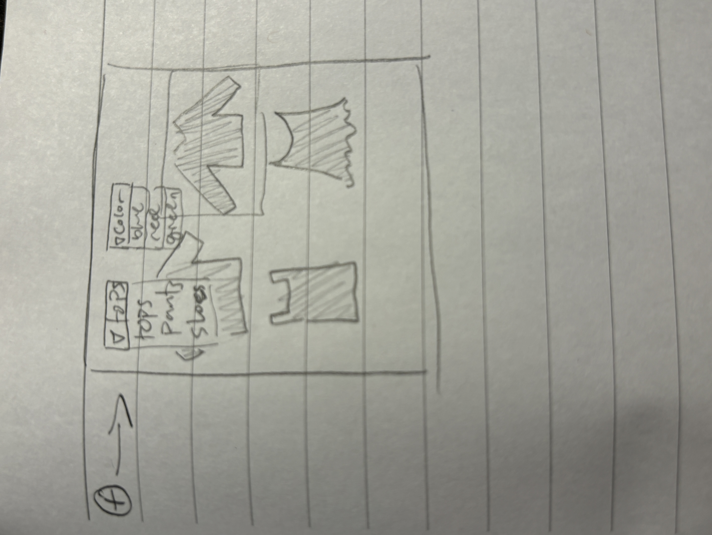
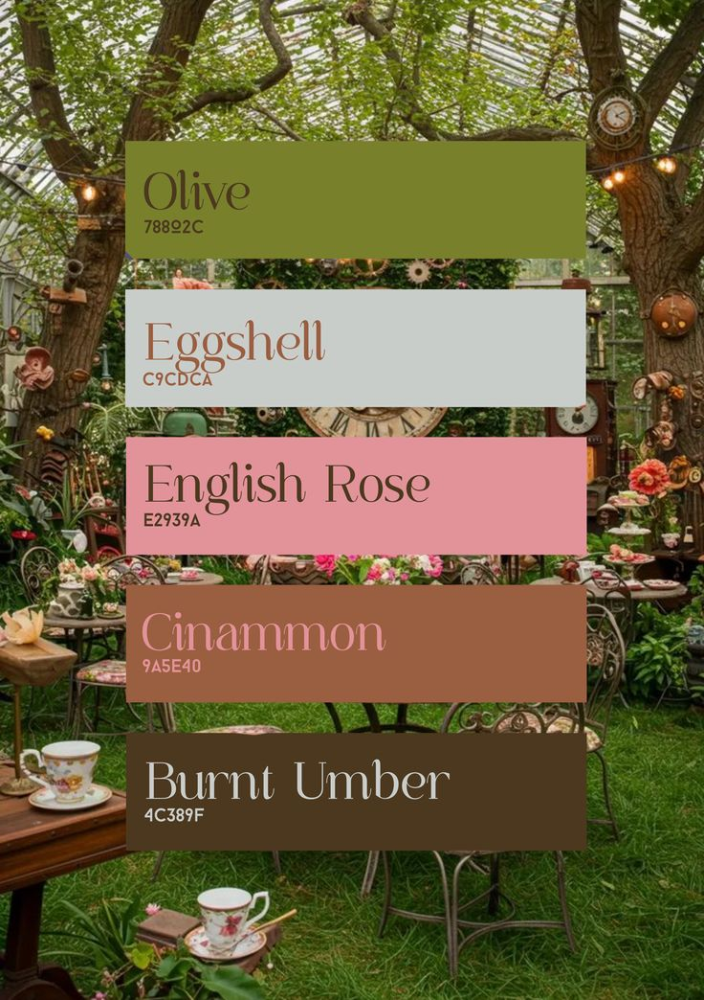

In this game, you will be able to pick clothes, choose their color, and then add them to your wardrobe. From your wardrobe, you will be able to dress up a little avatar in the middle of the screen.
Genre: cozy, simulation
Platform: Desktop and mobile web
There isn't much of a story, so it's pretty abstract. Mainly the purpose is to be able to dress the character in hte middle up and test what clothes work together and what outfits look best. Ideally, users use it to simulate their own wardrobe so they can test out outfits for themselves and possibly test out if new clothes would work with the clothes they already have before buying them.
I want the aesthetic to be very cozy and warm. it needs to feel comfortable, like you're actually in a room trying on clothes and hanging out.
One of the main mechanics is adding clothes to your wardrobe. To do this, players will pick an item of clothing (like a shirt or pants)
and then they will choose the color of the article, which will put an overlay over the item to make it that color.
The second big mechanic is dragging and dropping from the wardrobe onto the character in the middle of the screen, which the player can do just by
holding down and dragging.



I'm probably gonna be using some of the base code from magnet poetry for the drag and drop stuff and I might end up using free assets if I dont have time to make them all myself.
My name is Camden Doyle and I am a second-year Game Design and Development major and I plan on minoring in Software Engineering and Creative Writing. I am interested in art, music, and design.